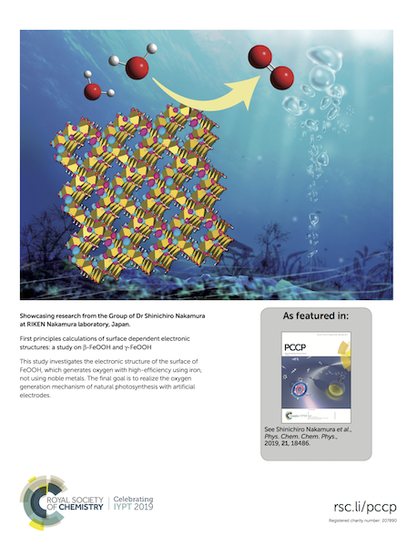

Skip to content
YukiSakamoto.github.io
Journal cover
Type to start searching
YukiSakamoto.github.io
Home
Home(English)
研究実績
Misc
Misc
Projects
Tiny Hartree-Fock program
Journal cover
Journal cover
Table of contents
Phys. Chem. Chem. Phys. 2019
Table of contents
Phys. Chem. Chem. Phys. 2019
Covers of journals
Phys. Chem. Chem. Phys. 2019

Paper:
Phys. Chem. Chem. Phys., 2019,21, 18486